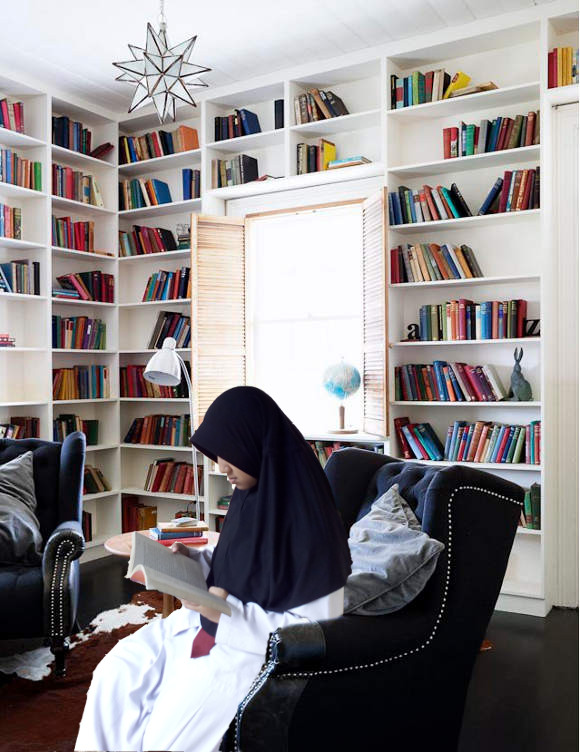

Sherly's Biodata
Nama Lengkap :Sherly Ananda
Nama Panggilan :Sherly
Tempat, Tanggal Lahir :Jakarta, 7 Agustus 2001
Saudara :2 (Anak ke-2 dari 3 bersaudara)
Zodiak :Leo
Makanan Favorit :Sebagian besar makanan yang halal
Minuman Favorit :Air Putih
Hobi :Membaca buku (Kecuali buku pelajaran), Menonton Film (Terutama Anime), Bermain Game
Hello, namaku Sherly. Umurku 16 tahun. Aku anak kedua dari 3 bersaudara, kata orang anak jadi anak tengah nggak terlalu enak dan ternyata hal itu gak sepenuhnya salah hahaha. Sekarang, aku bersekolah di SMK-SMAK Bogor, karena letaknya yang jauh dari rumah sekarang aku ngekos di Bogor. Ngekos itu gak terlalu enak, karena selain jauh dari orangtua juga agak susah untuk menghemat uang, apalagi kalau tiba-tiba ada kebutuhan mendadak.
Nah, sekarang aku akan membahas tentang hobiku! Aku memiliki beberapa hobi, tetapi dari semua hobi yang paling sering kulakukan adalah membaca. Karena di kosan tidak terlalu banyak buku bacaan sekarang aku lagi suka membaca dari blog-blog atau aplikasi untuk membaca seperti 'Wattpad atau Fanfiction'. Tapi dari semua buku ataupun Web untuk membaca aku paling suka membaca comic, hal ini dikarenakan dari kecil aku sudah dikenalkan sama comic terutama dari saudaraku. Karena itu sekarang aku sangat suka membaca comic. Dari semua genre buku yang pernah kubaca, aku paling suka dengan genre fantasy adventure. Hal itu dikarenakan saat aku membaca aku bisa membayangkan diriku menjadi salah satu bagian cerita tersebut sehingga hal itu seperti pelarian bagiku.
Hobiku yang paling sering kulakukan selanjutnya adalah menonton film, baik itu film barat ataupun anime, tetapi aku sangat tidak suka menonton film Indonesia apalagi yang sinetron. Hal ini dikarenakan film yang sering ditayangkan di Indonesia apalagi yang sinetron sangat mudah ditebak alunya yang itu-itu doang, alurnya hanya seputar kisah percintaan dua orang dengan orang ketiga membosankan sekali. Gara-gara itu aku jadi tidak terlalu suka mennton TV palingan stasiun TV yang masih aku tonton cuma Net, Trans7, sama Global TV yang lain aku tidak terlalu menontonnya lagi. Aku ingin stasiun televisi di Indonesia menayangkan kembali kartun-kartun yang dulu sering ditayangkan di TV setiap hari libur dari pagi sampai siang.
Tapi sekarang, karena aku tidak terlalu suka menonton film di stasiun TV Indonesia aku jadi menonton film yang aku mau di laptop. Koleksi film yang aku dan kakakku kumpulkan sudah cukup banyak, lebih dari 150 film loh! belum lagi anime sama drakornya, tapi yang nonton drakor cuma kakakku saja sih karena aku tidak terlalu suka sama drakor. Tetapi, aku tidak boleh membawa laptop ke kosan jadinya aku juga susah untuk menonton. Untungnya, teman sekosan aku juga suka menonton dan dia juga membawa laptop kekosan jadinya kita sering nonton bareng pas malem (kalau lagi gak banyak tugas sih hehe). Kami paling sering menonton anime bareng karena di kosan aku yang suka sama anime ada 3 irang termasuk aku sendiri dan ada 1 orang lagi yang juga suka menonton tapi tidak seperti kami yang suka banget sama anime, dia biasa saja soal menonton anime.
Mungkin itu saja dulu tentang diriku dan beberapa hobiku. Terima kasih karena sudah membaca Website ini yaa. See you!!